― 두 번째 방문(2024년 11월) ―
이 글은 AI(Claude 3.7 Sonnet)로 작성한 것을 일부 덧붙였습니다 ㅎㅎ🍜✨ 2024년 11월에 먹었습니다😄
나고시 구스쿠의 시영시장에 있는 '사쿠라 쇼쿠도'를 소개합니다😊 전에 먹은 이후로 꽤 오랜만에 왔습니다😆
시장 안에 있는 가게라서, 지역 분들에게 사랑받는 가게라는 분위기가 전해져 옵니다.
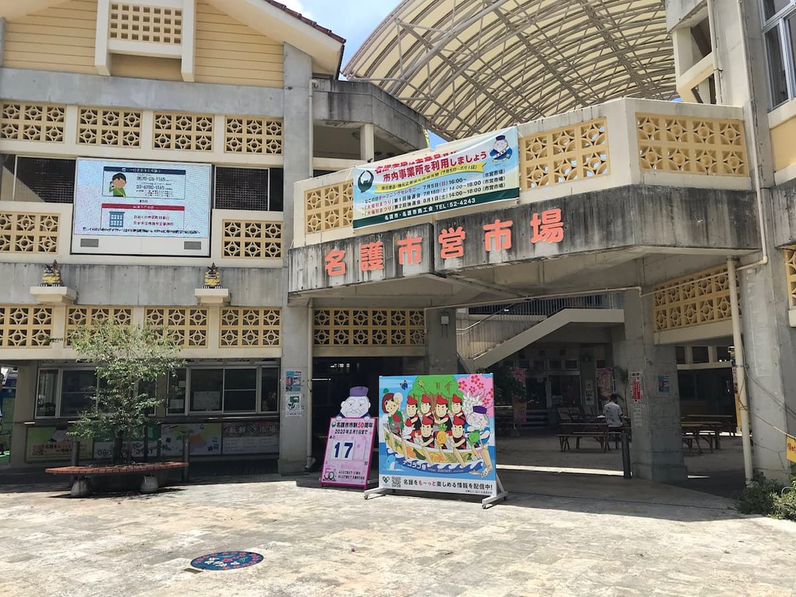
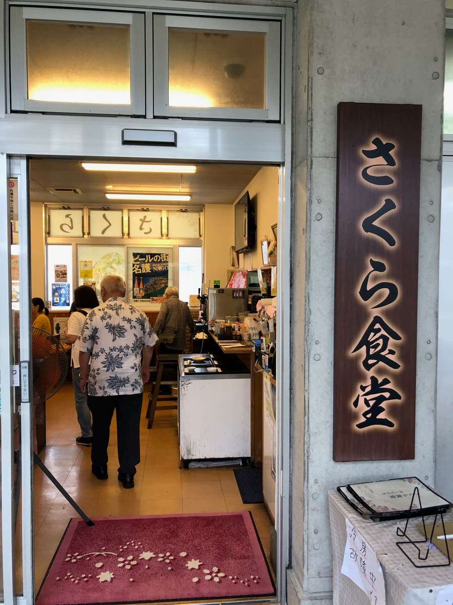
가게 안에 들어가면 옛날 식당 분위기가 감돌고 있습니다.
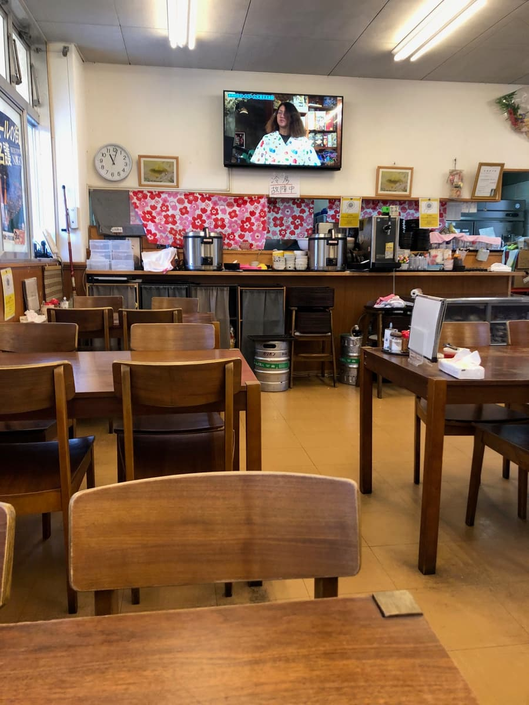
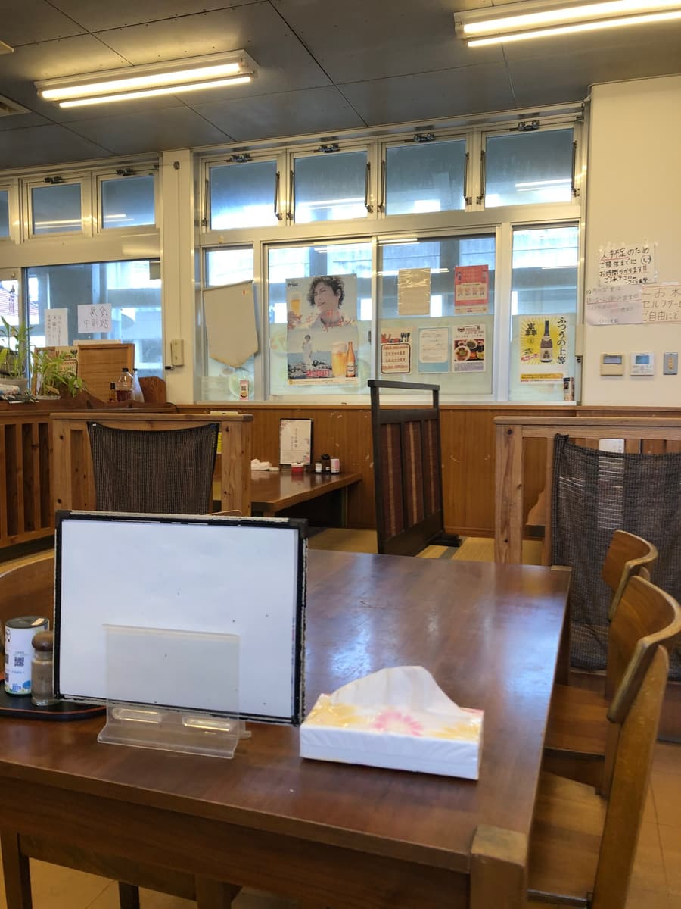
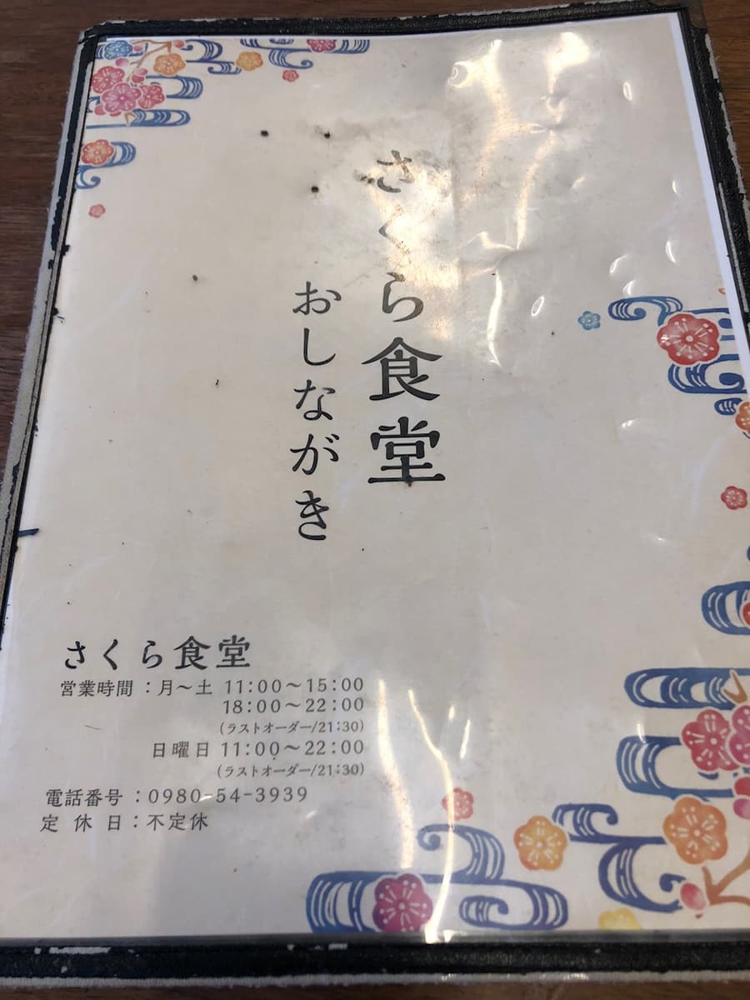
지난번에는 '유시두부 소바'를 먹고 추천 가게에 뒤지지 않는다고 소개했었는데, 다음에 오면 먹고 싶다고 생각했던 '스태미나 숙주 소바'입니다😄
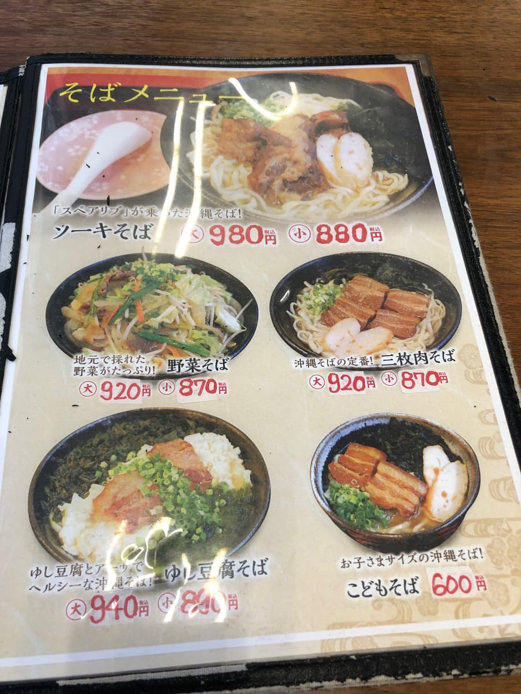
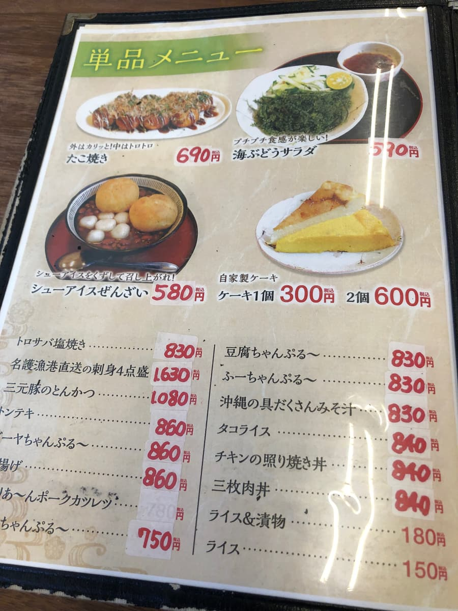
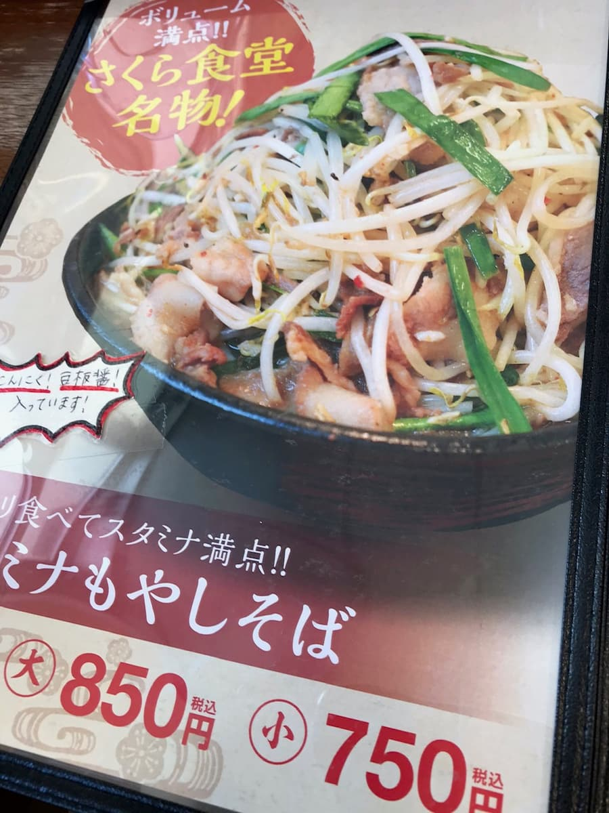
메뉴를 보니, 명물 '스태미나 숙주 소바'라는 글자가 눈에 확 들어왔습니다. 이건 지난번에 먹었을 때부터 '다음에는' 하고 생각했던 메뉴라서, 주문할 수밖에 없겠네요🔥
잠시 후 '스태미나 숙주 소바' 등장! 먼저 눈길을 끄는 건, 면 위에 산더미처럼 올라간 숙주와 잘게 썬 고기의 양입니다😳 이건 양이 정말 푸짐하네요!
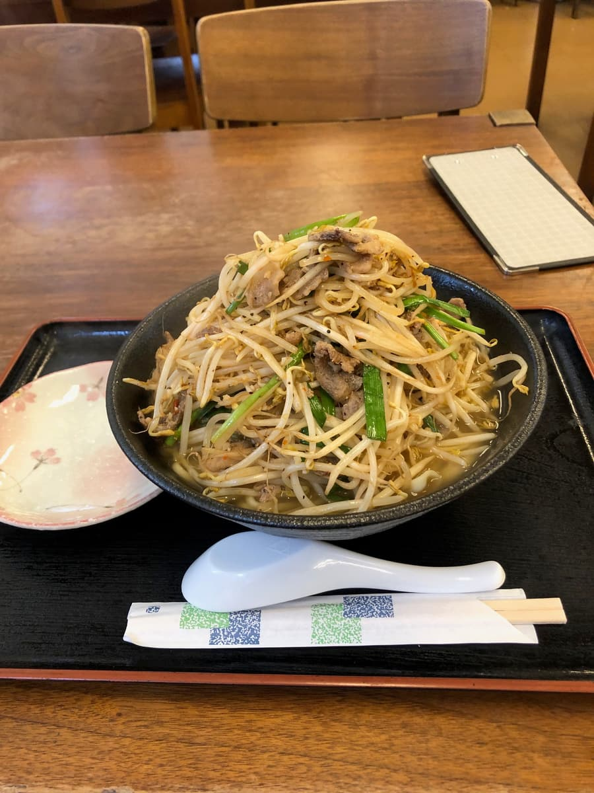
먼저 늘 하던 대로 국물을 한 모금. 가쓰오와 돼지를 섞은 육수일까요? 아니면 아구 육수일지도 모르겠습니다. 감칠맛이 확실히 살아 있어서 맛있는 국물입니다😋
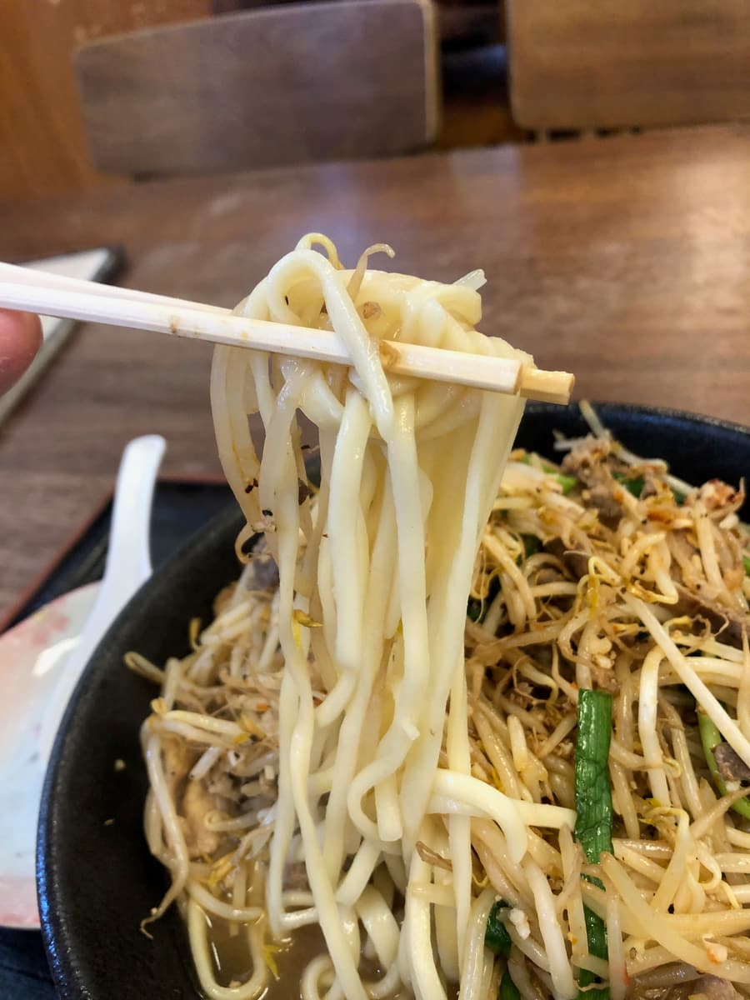
다음으로 면을 먹어 봅니다. 중간보다 가는 스트레이트 타입으로 부드러운 편의 식감이지만, 이 요리에는 잘 맞습니다! 무난하게 맛있네요.
그리고 특징적인 것이 건더기. 산더미 같은 숙주와 잘게 썬 고기가 마늘과 두반장으로 양념되어 있어서, 매콤한 풍미가 끝내줍니다! 먹으면 몸이 뜨거워져서 땀이 납니다💦 이것이야말로 그야말로 스태미나 계열! 이름 그대로 파워풀한 한 그릇입니다.
큰 사이즈를 주문했는데, 상상 이상의 양이라 도중에 포기할 뻔했습니다😅 다음에는 작은 사이즈로 충분할 것 같습니다. 그래도 만족감은 상당할 거예요.
평가(12점/15점): 나고시 구스쿠의 시영시장이라는 지역 밀착형 장소에 있는 가게인데, '스태미나 숙주 소바'는 일반 오키나와 소바와는 확연히 다른 개성적인 한 그릇입니다. 매콤한 맛에 땀을 흘리며 먹는 느낌이 중독될 것 같습니다. 오랜만에 이 가게에서 먹었는데, 역시 추천입니다. 양도 푸짐하니, 배를 비우고 가시길 추천합니다! 한 번쯤 먹어 볼 가치가 있어요😊
면: ★★★★☆（4）
수프: ★★★★☆（4）
토핑: ★★★★☆（4）
― 첫 번째 방문(2020년 7월) ―
'나고시 소바 맵'에 소개되어 있어서, 2020년 7월에 먹어 봤습니다😀
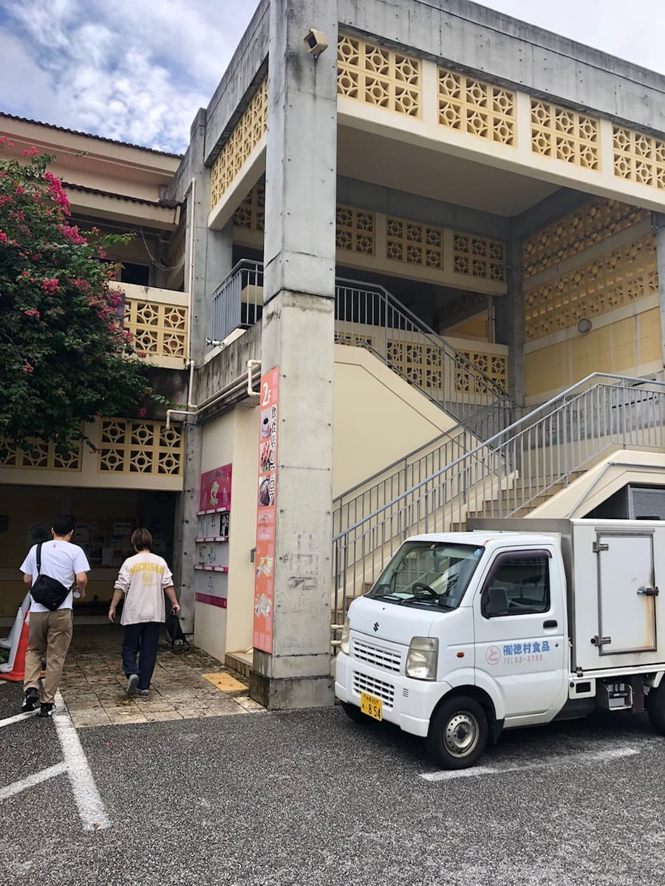
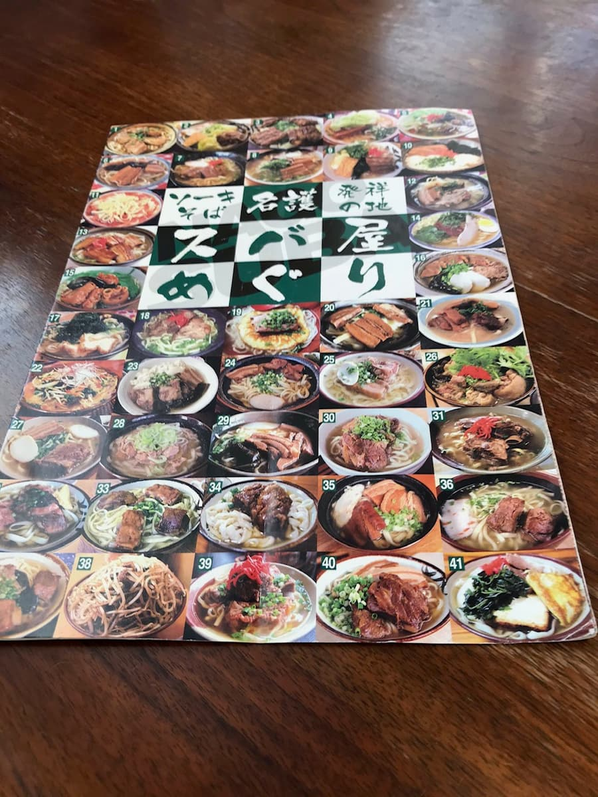
소바 맵에서 소개된 '유시두부'를 주문.
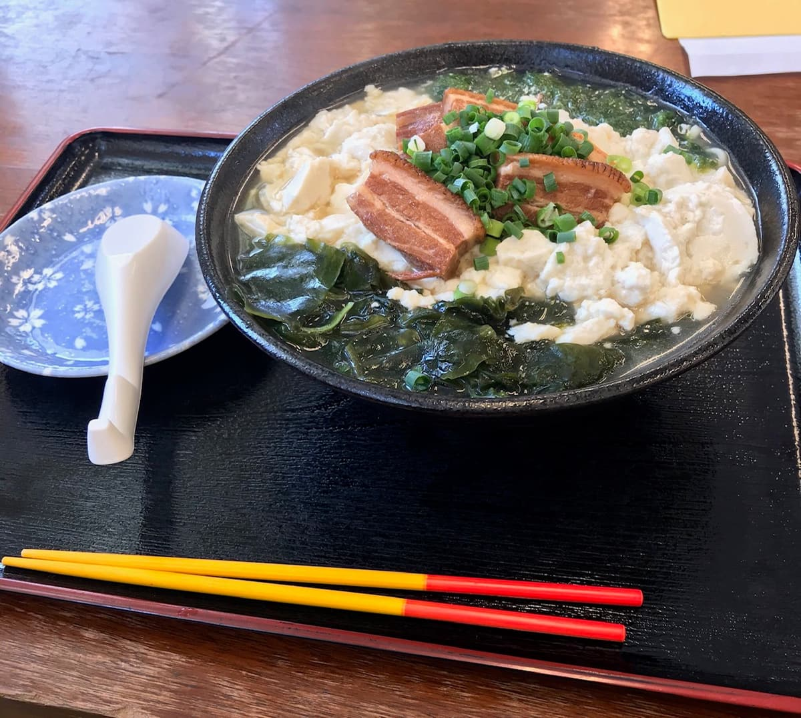
현지 나고산이 자랑인 아구 육수는 맛이 진하고, 납작한 면과 함께. 건더기도 미역, 파래(아사), 삼겹살 조림, 유시두부로 양이 푸짐합니다😀 맛있네요.
메뉴표에는 사쿠라 쇼쿠도 명물로 '스태미나 숙주 소바'가 소개되어 있어서, 다음에는 이걸 먹어 보고 싶어요🤤
평가(12점/15점): 양도 많고 맛있습니다. 여기도 추천이니 꼭 드셔 보세요.
PS: 시영 주차장 안에 어느 정도 무료 주차장이 있으니, 빈자리를 확인하지 않고 주변 코인 주차장에 주차하는 일은 조심합시다.
면: ★★★★☆（4）
수프: ★★★★☆（4）
토핑: ★★★★☆（4）